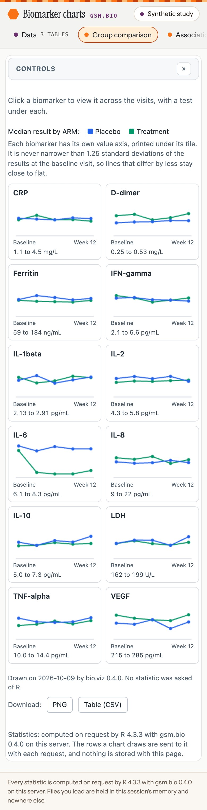
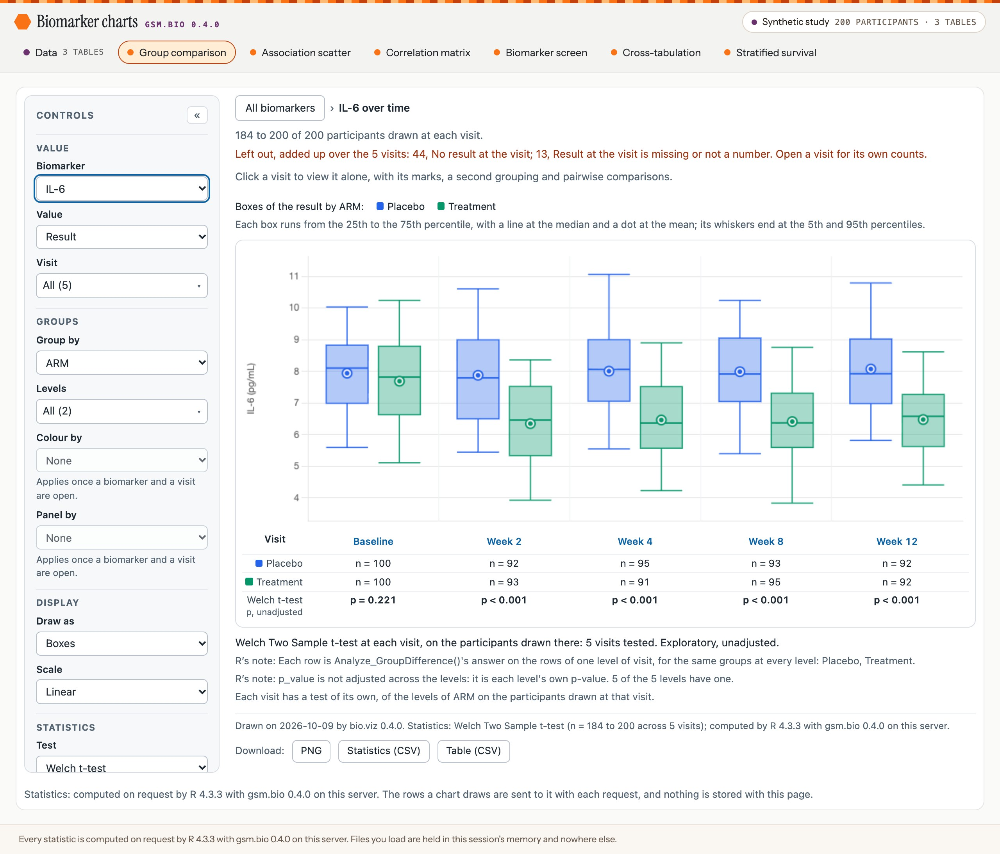
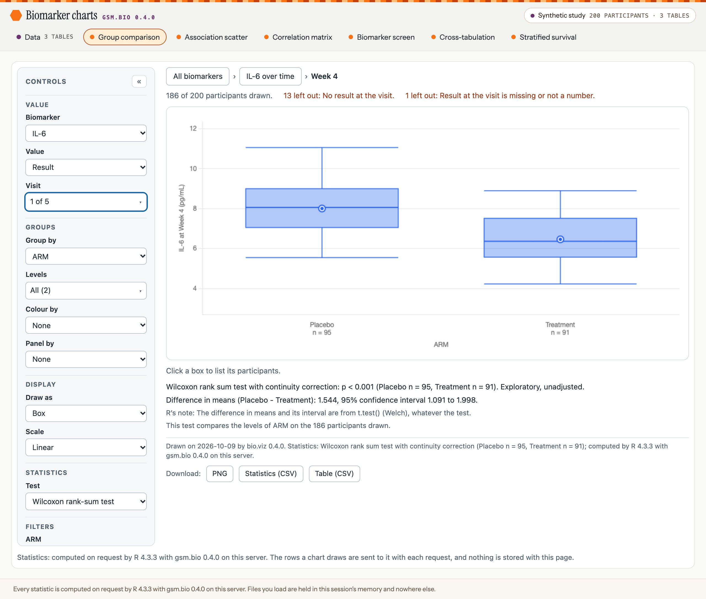
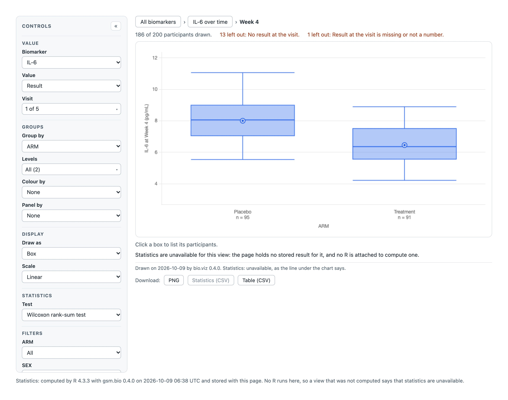
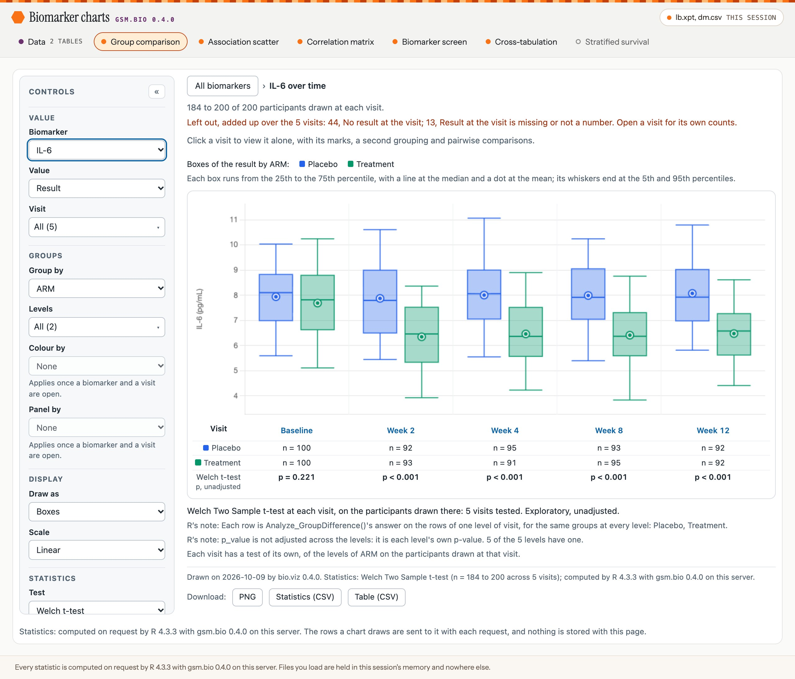

bio.viz gsm.bio v0.4.0 release candidates
What v0.4.0 of gsm.bio and bio.viz adds, annotated
gsm.bio v0.4.0 is the six biomarker charts as one Shiny app. You can load a study of your own from a file, every view takes its statistics from the R session behind the page, and the app deploys to Posit Connect as one file. bio.viz v0.4.0 is the small change in the chart library that makes that possible. Below, each change is shown in the running app with what you should see, and with the detail the short release notes leave to this page.
6 charts in one app .csv, .xpt and .sas7bdat files every statistic computed by R on the server made-up study: 200 participants, 12 biomarkers, 5 visits
Where the two stand
- Both are release candidates, put in front of @jwildfire together: gsm.bio v0.4.0 (#83) and bio.viz v0.4.0 (#126). Until they are tagged, the install line on this page names the
devbranch. - The app has no public address. Nothing here was deployed to a server, and no one has deployed the app to Posit Connect yet. Section 06 says what stands in for that and what your first deployment will be the check on.
- The stills are of the app run on a laptop by R 4.3.3, from gsm.bio at d2e018a, opened in a headless Chrome. A script beside this page takes them again.
- The app’s look was designed during this release: a header with a pill for each chart, a chip that says what the charts are drawn on, and a Data page laid out as three steps. Section 04 puts it beside the mockup it was built from (the requirement for the app as a web app, obot.roadmap #400).
- The release notes are short, and the detail behind them is here: under “The detail” in each section.
What to look at
- Run
gsm.bio::RunApp(). The six charts open in one page, on the made-up study, with a pill in the header for Data and for each chart. - Click the IL-6 tile. R’s test of the arms is under each visit, and the footnote says it was computed on this server.
- Open Week 4 and switch the test to the Wilcoxon rank-sum test. A saved widget cannot answer that view; the app does.
- Open Data. The tables that are loaded are shown there. Choose a file of your own, say which column is which, and press the button: the charts are drawn again on your file.
- Read section 06 before you deploy: the one file, the call, and what has not been tested.
The app: six charts in one page
How do you look at a study’s biomarkers without writing a page of your own? RunApp() returns a Shiny app: a header with a pill for Data and for each of the six charts, and one chart drawn at a time. With no table it opens on the made-up study that ships with the package.
![The app as it opens. A header reads Biomarker charts, gsm.bio 0.4.0, with a chip at its right reading Synthetic study, 200 participants, 3 tables. Under the name a row of pills: Data, 3 tables; Group comparison, which is chosen; Association scatter; Correlation matrix; Biomarker screen; Cross-tabulation; Stratified survival. Below, in a card, the group comparison's controls and twelve trend tiles, one per biomarker, with a blue line for Placebo and a green line for Treatment. Under the chart a line reads: Statistics: computed on request by R 4.3.3 with gsm.bio 0.4.0 on this server. A footer line says which R computes the statistics and that files are held in this session's memory and nowhere else.](media/app-opens.jpg)
The app as it opens. The chart and its controls are the package’s own widget, unchanged; the app adds the header, the line under the chart and the footer.

On a phone the header is two rows, and the pills scroll inside their own.
What you should see
- Seven pills in the header: Data, then the six charts. The app opens on the group comparison.
- At the header’s right, a chip: “Synthetic study 200 participants · 3 tables”. It says what the charts are drawn on, on every page, and opens Data when pressed.
- Under the chart: “Statistics: computed on request by R … with gsm.bio 0.4.0 on this server.”
- The tiles the app opens on draw medians and ask R for nothing, so the chart’s own footnote reads “No statistic was asked of R.” until a biomarker is opened.
- A chart is drawn when you choose it, so only the one you are looking at has been sent to the page.
Try it
- Once:
install.packages(c("remotes", "shiny", "haven")), thenremotes::install_github("jwildfire/gsm.bio@dev"). - Run
gsm.bio::RunApp()at the R console. Your browser opens on the app. - Click each of the other five chart pills in turn. Each chart draws, and its footnote ends “on this server.”
- Stop the app with Esc in the console.
The detail
- On your own tables:
RunApp(dfResults, dfParticipants, dfOutcomes). Only the results table is needed.- Results: one row per participant, biomarker and visit, with the columns
USUBJID,TEST,STRESN,VISITandVISITNUM. - Participants:
USUBJIDand whatever describes a participant. Its other columns become the groups and filters. Without it the charts have none. - Outcomes:
USUBJID,PARAMCD,PARAM,AVALandCNSR. Without it the stratified survival chart’s place holds a sentence saying so.
- Results: one row per participant, biomarker and visit, with the columns
- A table that lacks a column is refused before the app starts, with a sentence naming the column, such as “
dfResultshas no column namedVISITNUM”. lSettingsopens a chart on a view of your choosing, under the chart’s name and bio.viz’s setting names:RunApp(lSettings = list(GroupComparison = list(start_value = "CRP", group_by = "ARM"))).RunApp()returns the app and starts nothing. Printed at the console it runs; as the last line of anapp.Rit is what a server runs.- No control of a chart is made again as a Shiny input. Shiny holds the tables and answers statistics, and that is all it does.
- The pills are Shiny’s own tab links, restyled: each is still a link, reached with Tab and the arrow keys. A pill’s hover text says what its chart draws.
- With no outcomes table the stratified survival pill is dimmed, in grey with a hollow dot, and says why. It can still be opened.
- The page asks Google Fonts for two typefaces and uses the system’s when the request is not answered; it does not wait for them. It is the reader’s browser that makes the request; where it is blocked, the app is drawn in the system’s fonts.
- shiny is suggested, not imported: the widgets do not need it, and
RunApp()says so in one sentence when it is missing.
Reference: RunApp(). Tasks: the app (gsm.bio #72, pull request #76), and its header, pills, chip and footer (gsm.bio #84, pull request #92).
Every view takes its statistics from R on the server
A saved widget carries the answers R gave when it was made, so it can show only the views it stored. In the app the chart asks the R session behind the page each time, and the line under the chart says which R answered.

IL-6 across the visits, after a click on its tile. The row of tests was asked of the session in one request.

In the app: Week 4, with the test switched to the rank-sum test. R answers.

The same switch in a saved widget of the same settings. It stored Welch’s test, not this one, and says so.
What you should see
- Under the IL-6 picture, R’s test of the arms at each visit: p = 0.221 at Baseline, then p < 0.001 at Week 2, Week 4, Week 8 and Week 12.
- At Week 4, Welch’s test: a difference in means of 1.544, with a 95% interval of 1.091 to 1.998, on 95 and 91 participants.
- With the test switched: “Wilcoxon rank sum test with continuity correction: p < 0.001”.
- The footnote’s last words each time: “computed by R … with gsm.bio 0.4.0 on this server.”
Try it
- In the running app, click the IL-6 tile.
- Click Week 4 under the picture.
- Switch Test to the Wilcoxon rank-sum test.
- Switch Group by, a filter, or Value to Change from baseline. Each view is answered.
The detail
- The numbers above were read from the page and held to gsm.bio called directly on the same rows, with no page between: equal to the 16 digits a number crosses to the page at.
- The rows a chart draws are sent to the session with each request. The chart works them out in the page, where the filters, the cuts and a change from baseline are applied, and R tests those rows and no others.
- The session runs gsm.bio’s nine statistics functions and nothing else. Any other name a page sends is answered with a sentence and nothing is called. The rows and the arguments are read as data, never as R code.
- When the session cannot be reached, the line where the statistic would be says so, and the chart still draws:
- a session that has ended: “Statistics are unavailable: R on the server could not be reached (the session with the server has ended; reload the page).”
- a Shiny page that never calls
Serve_Statistics(), after 20 seconds: “… (its session answers no statistics: Serve_Statistics() is not called in the server function).”
- The other five charts were each opened in the same run and each answered by the session: the correlation, the matrix of correlations, the screen with its adjusted p-values, the chi-square test and the log-rank test.
Task: the widgets in a Shiny page (gsm.bio #71, pull request #75).
Your own files: choose one, say its columns
A reader does not need R to load a study. The Data page takes a results file, and optionally a participants and an outcomes file, each as .csv, .xpt or .sas7bdat. R reads it on the server and asks which column is which, and a rail beside the cards counts what is left to do.
![The app's Data page as it opens. On the left a rail headed Workflow with three steps: Choose files, none chosen; Say which column is which, nothing to say; Draw the charts, 6 of 6 charts ready, with a button Open group comparison. Under the steps, what the charts are drawn on: Results, 11,472 rows; Participants, 200 rows; Outcomes, 200 rows. On the right a card headed The tables the charts are drawn on, with a tab for each table and Results chosen, a line saying Results, from the synthetic study that ships with gsm.bio: 11,472 rows, 6 columns, rows 1 to 10, and a table of those ten rows with the columns USUBJID, VISIT, VISITNUM, TEST, STRESU and STRESN, and buttons for the previous and the next rows. Below it a card each for Results, tagged needed, and for Participants and Outcomes, tagged optional, each with a place to choose a file, and then the button Draw the charts on these files.](media/data-empty.jpg)
The Data page as it opens. The rail counts what is left to do; the first card shows what is loaded, ten rows at a time; then there is a card for each file.
![The Data page with two files chosen, lb.xpt and dm.csv. The rail's second step reads 3 of 6 columns still to say, in lb.xpt: participant, biomarker, result. In the results card five selects ask for Participant, Biomarker, Result, Visit and Visit order: the first three read Not said yet, in amber, each tagged say which; the last two are filled in as VISIT and VISITNUM and tagged same name. Under the selects are the file's first five rows, under its own column names. Each file's card has a Remove button. Under the Draw button a line reads These files: lb.xpt (results), dm.csv (participants), and beside the button a red sentence reads: Say which column of lb.xpt is each of these, and the charts can be drawn: participant, biomarker, result.](media/data-refused.jpg)
A results file whose columns are named SUBJID, LBTEST and LBSTRESN. The two columns that already had gsm.bio’s names are filled in and tagged “same name”, the three still to say are in amber, and the button was pressed with them unsaid: R’s sentence is beside the button.

With the three columns said and the button pressed, the charts are drawn on the file. The chip in the header names it, and the survival pill is dimmed because no outcomes file was loaded.
What you should see
- As the page opens: “Results, from the synthetic study that ships with gsm.bio: 11,472 rows, 6 columns. Rows 1 to 10, page 1 of 1,148.”, those rows, and in the rail “6 of 6 charts ready”.
- After a file is chosen: its name, its rows and columns, such as “lb.xpt: 11,472 rows, 6 columns”, a select for each column the charts need, tagged “same name” or “say which”, and its first five rows.
- Under the button, before it is pressed, the files it would draw: “These files: lb.xpt (results), dm.csv (participants).”
- With a column unsaid: R’s sentence naming it beside the button, “3 of 6 columns still to say” in the rail, and the charts left as they were.
- After the button: “The charts are drawn on lb.xpt, dm.csv, loaded in this session. 5 of the 6 charts are ready.”, a link to each chart, and the viewer on the file’s rows.
- In the stills the file is the made-up study under other column names, so IL-6 reads as in section 02: p = 0.221 at Baseline, then p < 0.001.
Try it
- In the running app, click Data. Press “Next rows”, and click the Participants tab.
- Choose a results file of your own. Any of the three types will do.
- Choose a column in each select tagged “say which”.
- Press “Draw the charts on these files”, then open a chart from the list beside the button.
- Choose another file, then press its Remove: it is gone from “These files”.
The detail
- The viewer shows the tables the charts are drawn on, so after the button it shows your file under gsm.bio’s column names. A number is written in full, to the fifteen digits that identify it, never as
1e+05, and a missing value readsNA. - A chosen file can be taken away with the Remove button in its card. The first candidate of this release had no way to do that, so a file left over from an earlier choice was drawn with the next one.
- A file R could not read is reported in its own card, in R’s words, with what to do. While it is there the button draws nothing, even when the file is an optional one: remove it or choose another.
- A file R warns about as it reads it is not drawn. A
.csvwith a byte outside UTF-8, or a quote never closed, would otherwise be read short with no sign of it. - Not fixed: an
.xptfile that has been cut short is read short, and haven says nothing (gsm.bio #90). Check the rows the page counts against your own. - A column is filled in only when its name is exactly gsm.bio’s. Nothing else is guessed.
- On the button R renames the chosen columns to gsm.bio’s names. A column of the file that already had one of those names, and was not the one chosen for it, is kept with
_originaladded. - Each of these is answered with a sentence, and the tables already drawn stay:
- a file type the app does not read;
- a file R cannot read, or one with no rows;
- a column left unsaid, or one column chosen twice;
- a result or a visit order that is text where a number is needed.
- The file is held in the R session’s memory and nowhere else. Shiny keeps its own temporary copy of an upload until the session ends. Nothing is kept between sessions: a reader who comes back chooses the file and says its columns again.
- The app accepts files up to 100 MB; Shiny’s own limit is 5 MB.
RunApp(nMaxUploadMB = 250)sets another. A larger file is refused in the page. .xptand.sas7bdatfiles are read with the haven package, which is suggested. Without it a SAS file is answered with a sentence naming the package, and a.csvfile is read all the same.- The
.sas7bdatfiles in the tests are written by haven, which is the only way R has to make one. A file SAS itself wrote is read too, haven’s own example.
Tasks: a reader’s own files (gsm.bio #73, pull request #77), the viewer (gsm.bio #80, pull request #81), the page’s layout (gsm.bio #85, pull request #95), and what the release review found (gsm.bio #86, pull request #91).
The look: beside the mockup it was built from
The first candidate of this release was a default Shiny page with a list of links down one side. Three shells were mocked up on an options page, the page recommended the first, option A, and that is what was built. Each mockup is below, beside the app as built at 1280 pixels and on a 390-pixel phone. A still opens at full size when pressed, and a tall one scrolls inside its frame.
The shell

As mocked up. One header row, which at this width has room for three of the six chart pills.
As built. Two header rows, so every pill is in view.

As mocked up, on a phone.

As built. The chip is kept, so a phone also says what the charts are drawn on.
The Data page as it opens


Files chosen: columns still to say, and a file R could not read

As mocked up.

As built, 1280 pixels. The viewer stays open above the cards; in the mockup it folds to one line.

As built, 390 pixels, with the button pressed: R’s refusal is under it.
The charts drawn on the reader’s files

As mocked up: the confirmation is a banner at the top.

As built, 1280 pixels: the confirmation and the list of charts are beside the button.

As built, 390 pixels.
The detail
- How it was chosen. @jwildfire, 2026-10-08, with the first version open in his browser: “Want it to look like a professional web app, not an ad hoc shiny app.” On 2026-10-09, with the options page read: “I’m good with the recommendation in the design dock.” The recommendation was option A.
- Where the app differs from the mockup, each a choice made while building:
- The header is two rows below 1880 pixels wide. One row at 1280 pixels cuts off three pills.
- On a phone the chip is kept; the mockup’s phone had none. The version mark is hidden there.
- The dimmed pill is grey with a hollow dot. The mockup dimmed it by opacity, which was too faint to read.
- The confirmation and the list of ready charts are beside the button, not a banner at the top.
- The viewer and the file cards do not fold away once a file is chosen or the charts are drawn.
- A card has no count of its own columns said; the rail counts them. The rail has no “Choose files” button; the three file controls are drawn alike.
- A column changed after the button was pressed clears R’s refusal, and the page says the charts are not drawn on what is now said.
- Every still on this page was held to have no sideways scroll at 390 pixels: the page is as wide as the window in each of the four phone states. The capture script stops otherwise.
- Not checked: any browser but Chrome, and a real phone.
Requirement: the biomarker app as a web app (obot.roadmap #400). Tasks: the shell (gsm.bio #84, pull request #92) and the Data page (gsm.bio #85, pull request #95).
Each widget in a Shiny page of your own
The app is built from parts you can use without it. Every widget has an output function and a render function, and one call in the server function makes the session answer whatever a chart asks.
library(shiny)
library(gsm.bio)
ui <- fluidPage(
Widget_GroupComparisonOutput("comparison")
)
server <- function(input, output, session) {
Serve_Statistics()
output$comparison <- renderWidget_GroupComparison(
Widget_GroupComparison(Synthetic_Results, Synthetic_Participants)
)
}
shinyApp(ui, server)The detail
- There is a pair for each of the six charts:
Widget_<Chart>Output()andrenderWidget_<Chart>(). Serve_Statistics()is called once in the server function, whatever the number of widgets on the page.- A chart in a Shiny page has text the size it has in a saved page. Shiny’s default page sets the root font size to 10 pixels, which drew a chart’s controls at 7.8 pixels; each output function now writes one rule into the page,
html { font-size: 100%; }, and Shiny’s own text, sized in pixels, does not change. - A widget rendered this way stores no result in the page: the session answers. The same
Widget_<Chart>()call outside Shiny stores its results as it always did, and a saved file still opens with no R.
Reference: Serve_Statistics().
On Posit Connect: one file, and what has not been tested
The deployment is one file, which ships with the package. The article on gsm.bio’s site gives the call and what the server needs.
library(shiny)
library(haven)
library(gsm.bio)
RunApp()dir.create("gsm-bio-app")
file.copy(system.file("app", "app.R", package = "gsm.bio"), "gsm-bio-app")
rsconnect::deployApp("gsm-bio-app", appName = "gsm-bio", appTitle = "Biomarker charts")Not tested
- No one has deployed this app to a Posit Connect server yet. The sessions that built it had no server to deploy to.
- Your first deployment is the check on three things: whether the server can reach GitHub to install gsm.bio, how long R takes to start there, and how the app behaves with several readers at once.
The detail
- What stands in for a deployment:
- The package’s tests run the app in a second R session and drive it in a headless browser.
- The record Connect installs an app from was written for real, once, with gsm.bio installed from GitHub. It is a Shiny manifest of 62 packages that lists gsm.bio, from GitHub, with shiny and haven. The article prints what the run printed.
- What the server needs:
- gsm.bio installed on your own machine from GitHub, not loaded from a checkout: rsconnect refuses a package it cannot trace to a source.
- A route from the Connect server to GitHub, for gsm.bio, and to a CRAN repository for the rest. gsm.bio is not on CRAN.
- A version of R near the one you deploy from. The line under each chart names the R that computed it.
- Two settings on the content’s Runtime tab:
- Several readers share one R process by default, and R does one thing at a time. If readers wait, lower “Max connections per process” so Connect starts more processes.
- An idle process is stopped after a while and the next reader waits for R to start. “Min processes” of 1 keeps one running.
- To open on a study’s own tables, read them in the
app.Rand hand them toRunApp(). The file’s own comments show how.
The article: The app, and putting it on Posit Connect. Task: gsm.bio #74, pull request #78.
What changed in bio.viz: a third way to reach R
A bio.viz chart computes no test. It asks a connection to R, which until now took two forms: results stored with the page, and R started in the browser. v0.4.0 adds a third, R on a server, and words its answer under the chart.
const connection = BioViz.r.createConnection({
server: {
engine: {
start: () => openMyServer(),
call: (name, { data, args }) => askMyServer(name, data, args)
},
computedBy: { r_version: '4.5.1', gsm_bio_version: '0.4.0' }
}
});The detail
- The page supplies what reaches its server: a
startfunction and acallfunction. bio.viz opens no connection of its own and names no address. - The footnote reads “computed by R 4.5.1 with gsm.bio 0.4.0 on this server” when the connection was told the versions, and “computed by R on this server” when it was not.
- R in the browser is still worded “computed by R in this browser”, and stored results “stored with the page”.
- A connection is given a server or a browser, not both: both together are refused with a sentence.
- When the server says it cannot be reached, the chart draws and the line where the statistic would be says so.
- Nothing else in the library changed. A page written for v0.3.0 loads and draws as it did, and the site’s own charts still start R in the browser.
Reference: the connection to R. Task: bio.viz #122, pull request #123.
What was measured: how long a reader waits
On the made-up study, 11,472 results rows for 200 participants, with the browser and the server on one laptop. A network adds its own time.
| From choosing the chart to R’s answer on the page | Time | Largest message to the session |
|---|---|---|
| Association scatter | 0.25 s | 7 kB |
| Correlation matrix | 0.22 s | 18 kB |
| Biomarker screen | 0.25 s | 20 kB |
| Cross-tabulation | 0.19 s | 7 kB |
| Stratified survival | 0.23 s | 6 kB |
- Another test on a chart already drawn: 16 to 18 thousandths of a second, in one message of 5 kB.
- These are one run’s times. Another run on the same machine differs by a few hundredths of a second for a chart.
- No chart sends the whole results table with a request. It sends the rows it draws: here at most one row per participant with a column per biomarker.
- The table that grows with a study is the one sent to the page when a chart is opened, all of it, each time. Nothing here is near two seconds, so nothing was built to keep the tables on the server.
A script in gsm.bio’s repository, data-raw/app-timing.R, measures it again.
How it is held
The tests behind each release
- gsm.bio: 396 tests, 56,376 expectations, none failed and none skipped from the repository, and
R CMD checkclean.- The app is run by a second R session and driven in a headless Chrome: each of the six charts is opened and every answer on it is held to its
Analyze_*()function called directly, a view no saved widget stores is asked for, and a file of each of the three types is loaded and drawn. - The header and the Data page are driven in the same browser: each pill by click and by keyboard, the rail’s counts in each state, a file taken away, and the page’s width at 390 pixels in every state.
- A name outside the nine statistics functions is sent to the session, and the file it would have made does not exist.
- In the repository these tests fail when the browser cannot start; they never skip.
- The app is run by a second R session and driven in a headless Chrome: each of the six charts is opened and every answer on it is held to its
- bio.viz: 515 unit and 401 browser tests, and 778 requirement rows, each with a test named for it.
- A test holds the three wordings apart: on this server, in this browser, stored with the page.
- The review of each release candidate is the comment headed “Review of” on its pull request.
Where to look further
- The release candidates: gsm.bio (#83) and bio.viz (#126). The notes: gsm.bio’s NEWS.md and bio.viz’s NEWS.md.
- The article: The app, and putting it on Posit Connect, and gsm.bio’s function reference.
- The requirement: an R app for the biomarker charts (obot.roadmap #399), and the app as a web app (obot.roadmap #400), with its options page.
- The v0.3.0 demo, for the group comparison’s three levels.